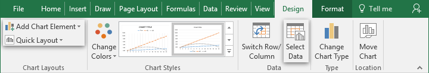
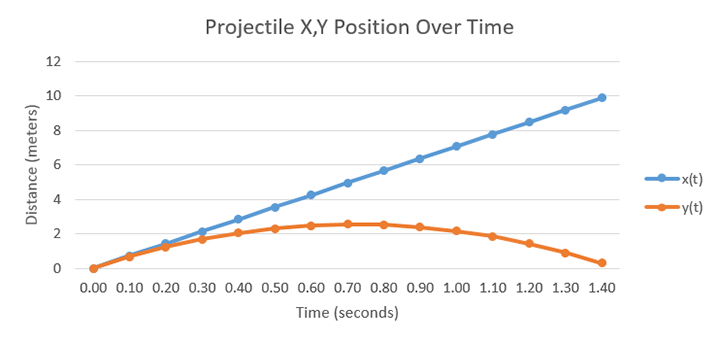
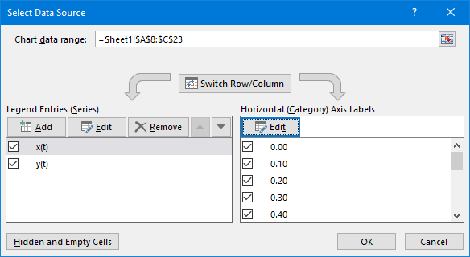
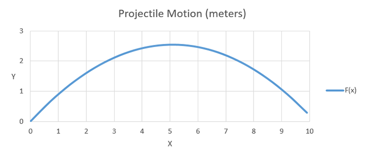
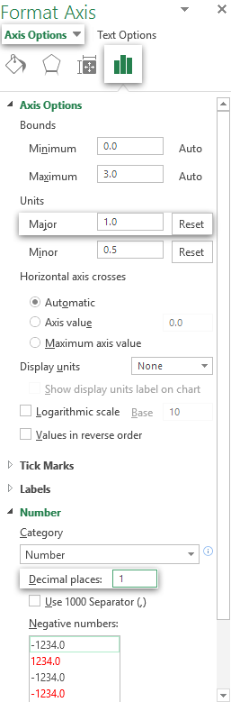

In this lab you will be using Excel to calculate and chart the trajectory of a projectile in a magical Earth-sized world with no friction. You will learn:
The use and importance of constants
More detail on relative and absolute references
How to create and deeply customize different types of charts
The benefits of well-constructed functions and good reference use
Task 1: Preparing Constants
There are several unchanging numbers (constants) that will be needed to calculate the trajectory later on. Instead of entering them manually whenever they're needed, they will be stored in their own section of the spreadsheet, and then referenced. After the calculations and graphs are done, these values can be modified and the results will automatically update to reflect them.
Create a new spreadsheet and record the constants shown in the above diagram. Give it a Constants title. Put the labels, values, and units each into their own column. Insert the theta: Θ and degree: ° characters where needed.
Inserting Special Characters
A collection of available characters is available in the Symbols window found in the Insert ribbon. Use the Subset drop-down to help find the symbols you need. The degree symbol is found in Latin-1 Supplement and theta is found in Greek and Coptic.
Where to find degreesWhere to find theta
Format the superscript in m/s2 and all the constants to 3 significant figures (as shown in the diagram). Excel unfortunately does not have a way to set the number of significant figures automatically without using several math functions, so add the appropriate decimal places to each using cell formatting.
Reminder: Cell formatting
Along with their place in the home ribbon, cell formatting options can be found in the quick settings box that appears above a cell selection's context menu. A context menu is a list of context-sensitive actions that appears when the right mouse button is clicked on something.
For a complete list of cell formatting options, select Format Cells in the context menu.
Use the alignment options in the home ribbon to make the constants section well-spaced and easy to read. Don't bother resizing the columns yet, you will probably want to do that after the data and charts have been finalized.
Task 2: Calculating and Generating Data
The end goal is to chart the path of motion of the projectile over a time interval, so the next step is to create formulas that calculate the projectile's x and y position at a given time. This requires knowing the speed in each direction, and since we only know the angled launch velocity, some basic trigonometry will be needed. Excel includes all the trig functions you will need: SIN(), COS(), and PI() (the sin and cos functions use radians).
Below the constants, create headers for three columns to contain Time(s), x(t), and x(y)
Use autofill to extend time from 0 to 1.4 at 0.1 second increments. Format this column to use 3 significant figures.
Reminder: Using Auto Fill
Selected cells will have a small box in the bottom-right corner of the selection area. If you click and drag this into adjacent cells, Excel will intelligently generate data based on the selected content into the new cells.
For example, if the selected cells contain the first few numbers of a simple pattern (such as three cells with 0, 1, and 2), Excel will generate more numbers that follow the sequence.
Create formulas in the first row of the x(t) and y(t) columns to calculate the position at the given time. Be sure to use absolute references to your constants where needed. The basic distance traveled formula is: d = d0 + v0t + ½at2. Hint: Gravity is negative acceleration in the y direction.
Reminder: Absolute References
A reference is created by typing the cell's address into the formula bar. By default, this is a relative reference, which will be different for each cell in an autofill. This is usually the desired result. In this assignment, for example, each row must reference the time interval directly left of it.
However, this is not wanted when referencing constant values. We want to always point to the same cell no matter what autofill is doing. To create an absolute reference, place a $ symbol in front of the direction you want to lock in the cell reference.
For example, if you are autofilling into new rows, you only need to stop the reference from updating the row part of the cell address, for example: B$2 will not change to B$3 in the next autofilled row. If this same reference was autofilled into new columns, the address would change to C$2 in the next cell.
Each blue cell was given the reference shown above it. It was then autofilled to the adjacent gray cells.Reminder: Using Functions
There are two main ways to use functions in Excel. If you are already familiar with the function you need, just directly type it into the formula. If, however, you need to look up a function, use the function wizard.
Click the Insert Function (fx) button to the left of the formula bar.Use either the search field or the category drop-down to find the desired function in the list, then click OK.The Number field accepts static numbers and/or references to one or more cells. The result of this field will be what is passed to the function. While typing in the field, click a cell to automatically insert its address. You will need to add $ symbols yourself if you need absolute references. Press OK to finish and insert the function into the formula bar.
Autofill the x(t) and y(t) columns to match the time column. You can do both of them at once with a single selection and fill operation. If you get #VALUE! errors, double check that all references to your constants are absolute in the vertical direction. If the value does not increase with time, make sure your reference to the time column is relative.
Set the decimal places of the x(t) and y(t) columns to 5 to make them look nicely aligned.
Task 3: Charting the Results

You will be creating two charts.
The 2 charts you'll be using.
The first will compare both the x and the y distance over time. This will require a line chart, with a line for each data set.
The second will plot (x,y) coordinates on a Cartesian plane to represent the shape of the trajectory.
3.1: Line Graph

Insert an empty dotted line chart (don't have any cells selected when clicking the appropriate chart button).
Add the x(t) and y(t) columns as data sets, and set time as the horizontal axis.
Selecting Data Sets

The Select Data button in the Design ribbon opens the Select Data Source window.
This window contains two sections:
The left section is for one or more data sets. Entries usually have a reference to a range of cells containing their plot point values, although the series can be entered manually as well. They also have a title which will be used in the legend. The bounds and increment steps of the vertical axis can be adjusted to match these values.
The right section is a list of labels to put along the horizontal axis. After adding data sets to the left section, it will automatically create basic numerical labels to match the number of values to be plotted. Usually a reference to another range of cells is entered to create these labels. Note that unlike the vertical axis, you cannot adjust the range or number increments of the horizontal axis. You can, however, apply the usual text and number formatting to them, as well as set an interval to show fewer, more spaced out labels.
If the task is fairly simple, use the Chart data range selection field at the top to reference your whole data set, headers included. Excel will then attempt to fill in everything automatically. You may have to correct some errors, such as removing extra data series, and entering new horizontal labels.
To set it up from scratch, click the Add button in the Legend Entries section to bring up another window for adding data sets. Input the series name (or a cell address, such as a column header) in the first field, and the cell range containing the data points for the second field. Multiple entries can be added, and they can also be edited at any time by opening this window again. The horizontal labels can be set using the Edit button in the Horizontal Axis Labels section.
Customize the chart to your liking, but make sure to add at least a title, a legend, and axis labels. Format the numbers in the vertical axis have one or two decimal places. The option for this is found in the Number section of the Format Axis sidebar, which appears upon clicking the axis element. See Axis Options in section 3.2 for more details.
Adding Chart Elements
The Quick Layout button contains several presets to common chart layouts. It's located in the Design ribbon that appears when a chart is selected.
For this task, none of the presets contain everything you need, or contain elements that you don't need. Elements can be added with the plus button to the right of the chart, or the Add Chart Element button in the ribbon, and deleted with the right-click context menu.
3.2: Cartesian Grid

Box-select both the x(t) and y(t) data sets and insert a Scatter (X, Y) chart with smooth lines. Do not select the column headers, as we are now treating both columns as a single series of coordinates.
Format the axis numbers to be integers incrementing by 1 (no decimal places), and add vertical and horizontal grid lines if they are not already there.
Axis Options
After selecting a chart, click on any element to open its section in the Format Chart sidebar. Double click the element if the sidebar was closed to bring it back. You can also switch elements using the drop down at the top of this sidebar. The 4 icons below that are tabs containing different formatting options, mostly relating to color and effects. Axis elements have an additional, particularly useful section, shown to the right.
The minimum and maximum Bounds fields set the range displayed by the axis. Leaving them set to auto is usually preferred, but they can be manually overridden if they're being too generous.
The Units fields set how much each axis number increments. Minor units can be shown by adding Tick Marks, but you won't need them for this simple grid.
The number section contains similar settings to the Format Cell window you're familiar with.
Rename the data series F(x) and add a legend for it.
Add a Polynomial trendline (Add Element > Trendline > More Trendline Options) that matches the trajectory, and check Display Equation on chart in its format sidebar. Don't worry about making the trendline itself visible, since it should be the exact same shape as the trajectory. Set its Intercept to 0.0 if it's messing with the vertical axis bounds.
Task 4: Presentation
Position the various sections and charts you have created to fit nicely and evenly spaced on a single page. You may also want to apply formatting to your data and charts to make them visually distinct.
Here are some formatting tips:
Save your work first!
You can move groups of cells together by first box-selecting them, then dragging them by the border that appears. Your cursor will change into an arrowed cross if its in the right spot. Excel should automatically fix any references to moved cells, so don't worry about making drastic layout changes.
The Chart Design ribbon contains several preset styles and color schemes ready to be played with. However, keep your document visually consistent with itself.
If your line chart's horizontal axis labels are too crowded, the interval field in the Format Axis sidebar can be set to display fewer, more spaced out labels.
Click a chart once to display its resize handles. Click-dragging these will resize the chart in that direction. Click-drag inside the chart to move it around. Again, watch how the cursor changes.
When resizing or dragging charts, holding the Alt keyboard key will align it to the cell grid. A chart will automatically follow any cell its aligned to when resizing rows or columns.
You can hide the cell grid in the View ribbon. If you do this, be sure to add borders to your data tables.
Task 5: Review
By following the methods outlined in this lab, your data visualization will be extremely flexible. Change the values of the constants, and the charts will update to show the newly calculated results. Set the time to different values, and your formulas will determine the projectile's position at that new point in time.
The only current limitation is that the charts only reference the first 15 data points. To quickly change this, select a chart and resize the colored selections that appear over your data using its bottom-right resize handle.
Your final task is to slightly change each of your constants, then add just one more row (using autofill of course) to your data set. If everything did not update correctly, you've made a mistake in your formulas.
Deliverables
An Excel spreadsheet well laid out in a single page containing:
A Constants table with labels and units.
The x and y position of a projectile projected over 16 time intervals, displayed in a 3 column table.
A dotted-line chart showing the x and y position over time. This chart must have:
Two data series (x and y)
A title
Axis labels
A legend
Correct units
A scatter chart visualizing the trajectory. This chart must have:
One data series of (x,y) coordinates
A title
A legend
Cartesian grid-like layout and units
An equation derived from a trendline
Save your document as Projectile_Firstname_Lastname.xlsx and submit it to the dropbox on D2L.
NOTE: This assignment is to be done individually. You can
help one another with problems and questions, but in the end everyone must
do their own assignment.